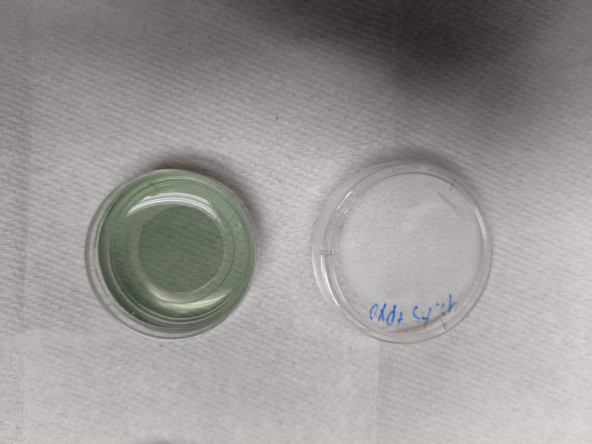
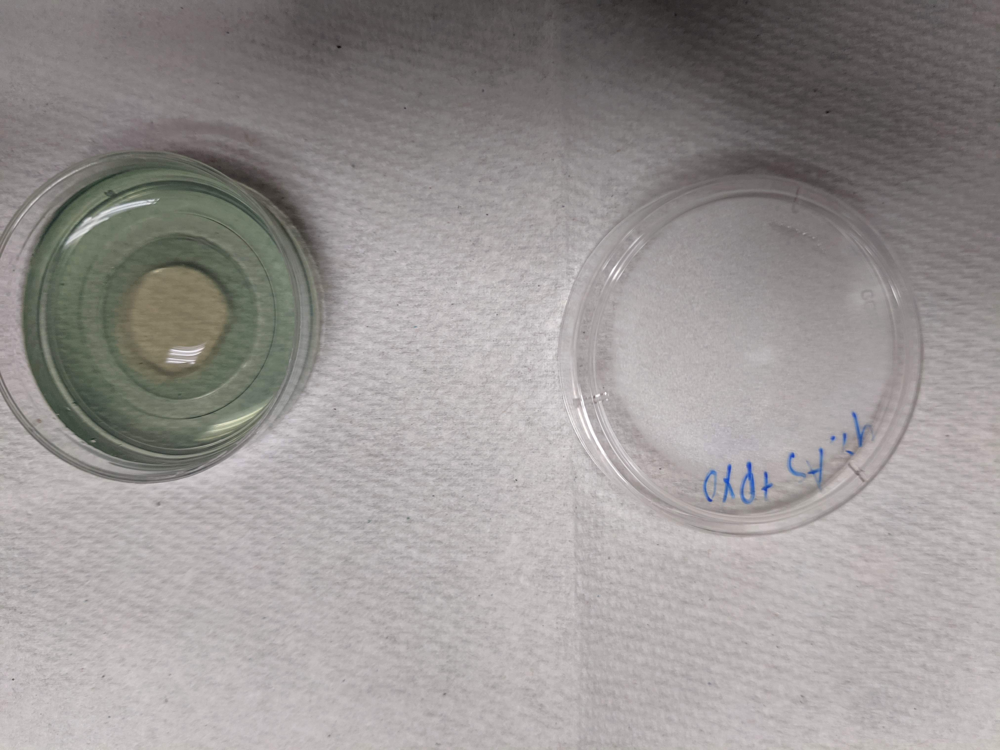
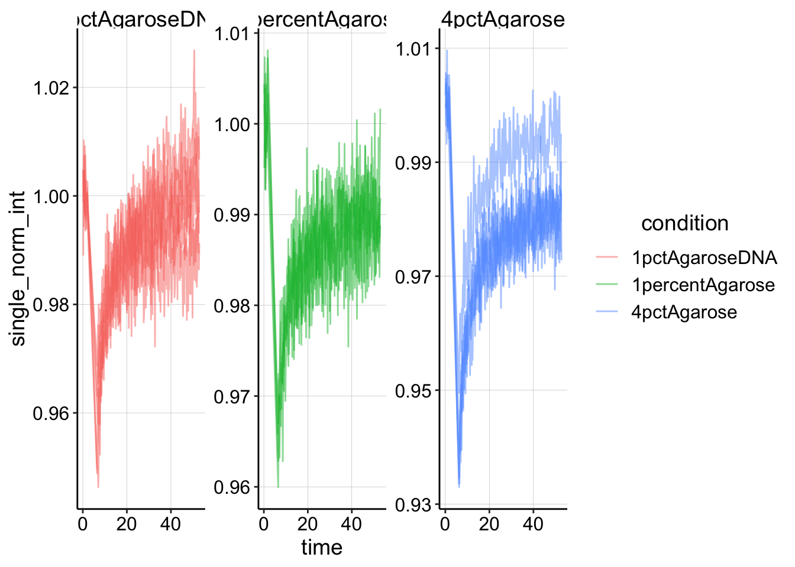
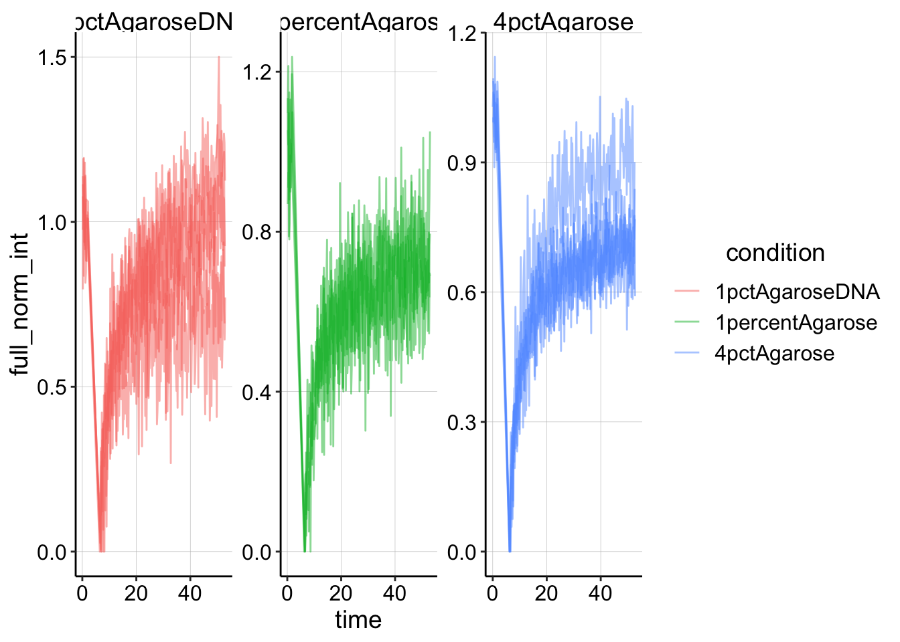
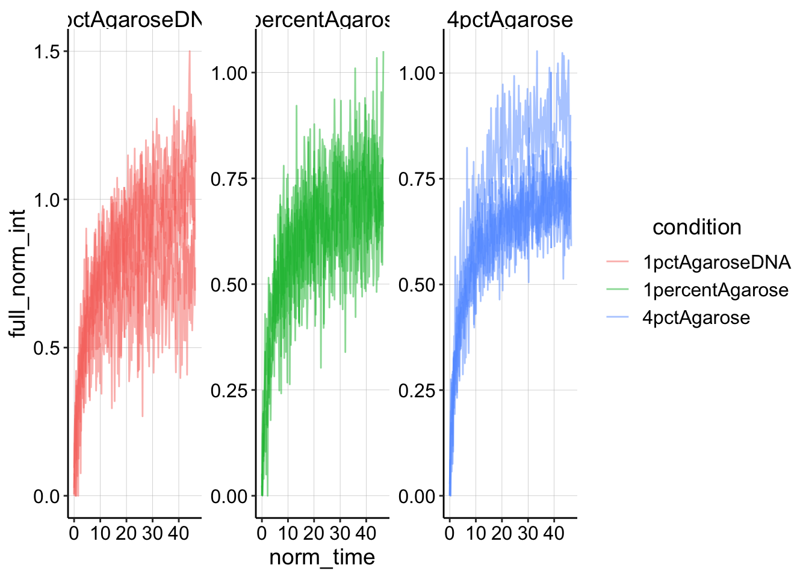
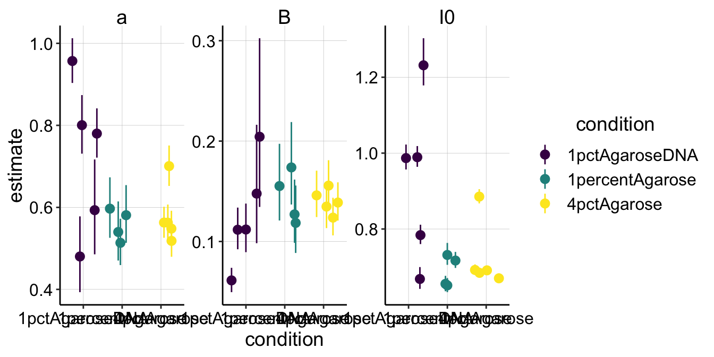
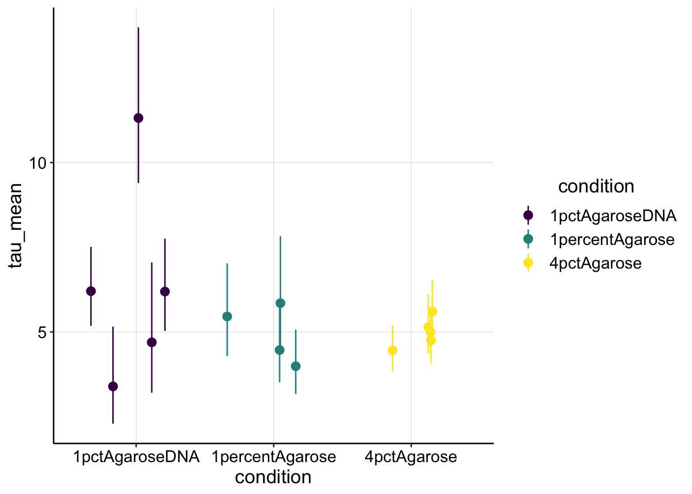
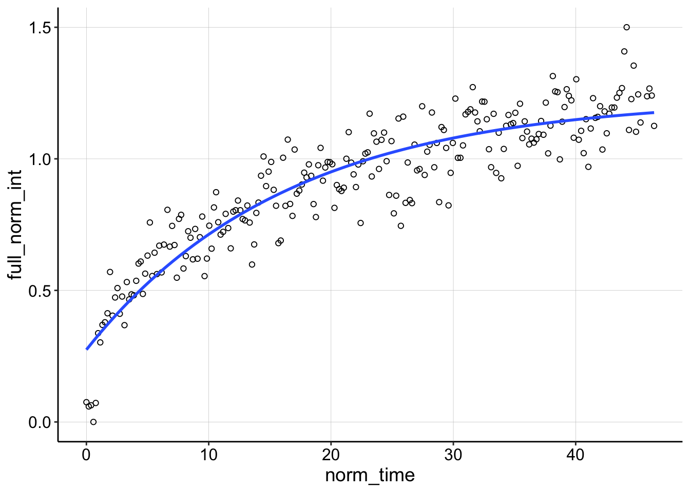
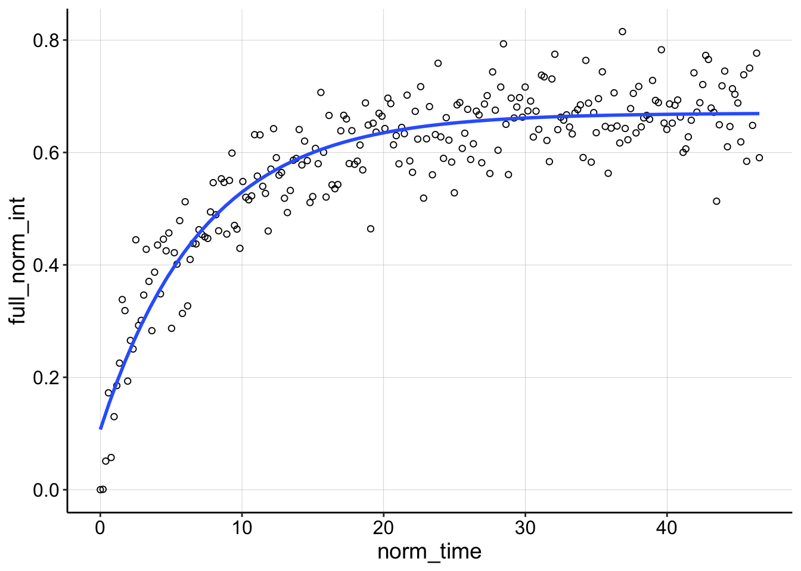
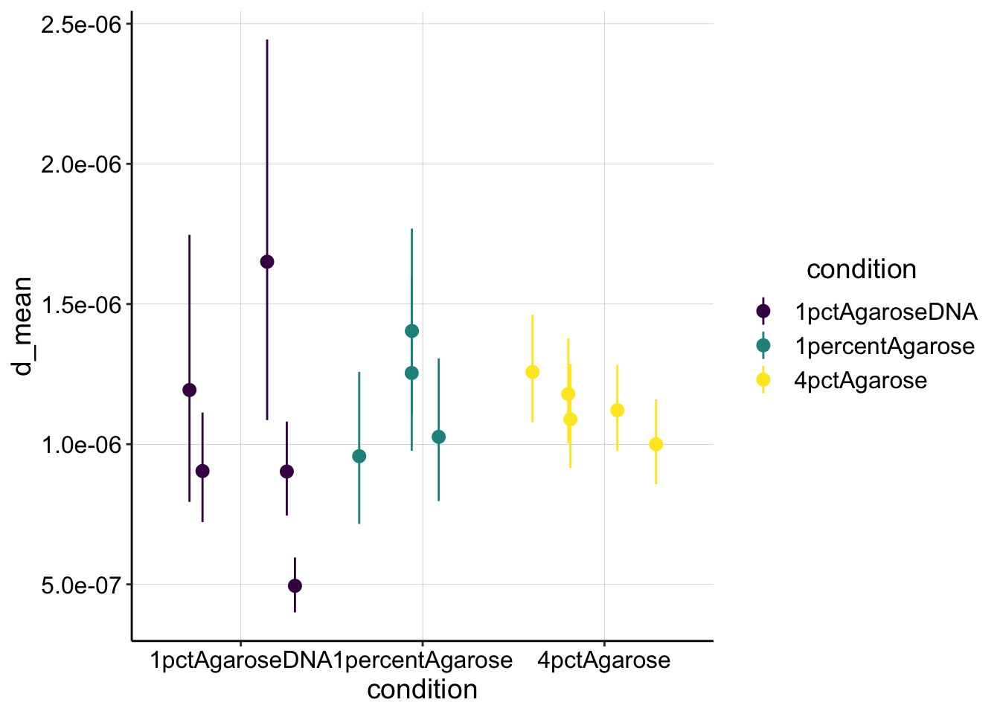

PYO FRAP
Analysis 2
05_30_19
library(tidyverse)
library(cowplot)
library(broom)
library(modelr)
library(viridis)
library(lubridate)
library(hms)
library(knitr)
library(kableExtra)
knitr::opts_chunk$set(tidy.opts=list(width.cutoff=60),tidy=TRUE, echo = TRUE, message=FALSE, warning=FALSE, fig.align="center")
source("../../IDA/tools/plotting_tools.R")
theme_set(theme_1())Intro
Ok, the idea for performing FRAP is that we could compare our echem estimates of \(D_{ap}\) / \(D_{phys}\) with a echem independent method. In this way we could perform echem and FRAP in vitro on reduced PYO samples to validate the echem method. This would be generally useful, but also could practically provide the foundation for a small paper we may try to submit in Sept.
This data is from my third time trying FRAP with PYO during the month of May.
Methods
For this iteration of FRAP, I loaded 3mL of molten agarose + PYO solution into mattek coverslip bottom dishes. PYO was ~ 300uM and I set up the experiment to compare 1% agarose to 4% agarose or 1% agarose + ctDNA (100uL of 5mg/mL solution). This setup worked quite well - I made stocks of 1% and 4% agarose (microwave) and then poured the molten solutions into 15mL falcon tubes and left those in the 60 degree water bath. Then I pipetted the required amount of PYO stock (~145uL) into another falcon tube (and ctDNA if needed) and then pipetted 3mL of the agarose stock into the tube. I vortexed then replaced the tube in the 60 degree bath for a minute. Finally, I could just pour directly from the tube into the dish and let it solidify (>10min).
At this point there should be no fluorescence in the agarose pad, because all of the PYO was oxidized. To reduce the PYO I have been using the reductant TCEP. At least 5 min before imaging I spotted 90uL of TCEP stock (~3mM final - a 10 fold excess over PYO) onto the center of the pad.
Before TCEP you can clearly see the blue - green oxidized PYO:
knitr::include_graphics("IMG_20190530_173653.jpg")
After TCEP addition, you can see that a clearish circle forms, which is the reduced PYO (which is fluorescent)
knitr::include_graphics("IMG_20190530_174341.jpg")
For the acquisition of the FRAP you can see the settings I used as images in this folder. Briefly, I used the HHMI 880 scope at the BIF with the 10x air objective. I zoomed into a 500um x 500um frame, which seemed to allow for faster scanning. I also used a very coarse pixel size (128px X 128px frame), so that the acquisitions could be taken very rapidly (~100ms). I setup my bleach area with the regions manager, and used the same area for all the acquisitions (100um diameter).
I used the 405nm laser to excite the PYO and collected all the light above that. It also helped that I could open the pinhole as wide as possible (~70um), since the internet suggested to open the pinhole to the scale of the structure being bleached…This allowed me to get nice fluorescent signal with relatively low laser power (3% ?) and gain (700?), which can be hard since PYO is a pretty weak fluor.
I took all of the FRAPS with pretty much the same parameters after playing around with the first sample. I did try a variety of bleaching times. Beyond 5 seconds there was no improvement in the bleach and shorter than that started to cause weaker bleaches (which were already very weak). Anyway, all of the data analyzed here was acquired with 20x of a speed 5 bleach.
You can see the more of dataset here: https://docs.google.com/spreadsheets/d/1yVjCwfowj3CKxjMnXN-0_H9WkdC7mJEGBxIwM22kokc/edit?usp=sharing
of course the raw czi files are still on the external harddrive as well.
Analysis
As you can see in the FRAP analysis 1 file from today, I tried a lot of random stuff that did not work particularly well. I could sort of extract \(\tau_{1/2}\), but because the data are very noisy the trend looked real, but the values were much too short…So I did some reading and I found a lot of random mostly useless information about FRAP. But finally I ran across ‘easyFRAP,’ which actually discussed how it fits the data in simple terms and apparently it even uses the ‘nls’ function, which I like. So see the plan below.
Plan
Refs: easyFRAP, and the manual appendix which has the actual equations and good stuff.
Using their terminology here’s the plan:
- Perform single normalization.
- Divide by the average pre-bleach intensity. Note that the manual refers to double normalization to correct for differences in fluorescence in the background of each image, which we could take into account later. I don’t think that is important right now though…
- Perform full scale normalization.
- With the singly normalized data subtract the intensity of the first post-bleach frame from the dataset, then divide by 1 - pre-bleach normalized intensity to scale the data from 0 to about 1 (if recovery is full).
- Before fitting the dataset, set the bleach to time zero.
- effectively we will set the time of the first post bleach frame to t=0.
- Fit with a single exponential model using nls (see math below)
- Use estimated coefficients to infer \(\tau_{1/2}\) then \(D_{ap}\) etc.
Single exponential model:
\[ I_{fit} = I_0 - \alpha e^{- \beta t}\] for this model:
\[\tau_{1/2} = \frac{ln(2)}{\beta}\]
Results
Ok let’s do this.
First, let’s read in the csv of the frap data. All of these scans were acquired in the same way, so they should be pretty comparable. In excel I already normalized the intensity values to the average baseline intensity (before bleach), so we already have the singly normalized data.
Here’s what the csv looks like.
df_single_norm <- read_csv("05_30_19_PYO_FRAP_data.csv") %>%
rename(single_norm_int = scaled)
df_single_norm## # A tibble: 3,500 x 12
## img_num time intensity avg_baseline single_norm_int filename condition
## <dbl> <dbl> <dbl> <dbl> <dbl> <chr> <chr>
## 1 1 0 0.032 127. 0.000251 1percen… 1percent…
## 2 2 0.208 128. 127. 1.00 1percen… 1percent…
## 3 3 0.399 128. 127. 1.01 1percen… 1percent…
## 4 4 0.591 126. 127. 0.993 1percen… 1percent…
## 5 5 0.782 127. 127. 0.994 1percen… 1percent…
## 6 6 0.974 127. 127. 1.000 1percen… 1percent…
## 7 7 1.17 127. 127. 1.000 1percen… 1percent…
## 8 8 1.39 127. 127. 0.997 1percen… 1percent…
## 9 9 1.58 127. 127. 0.998 1percen… 1percent…
## 10 10 1.77 128. 127. 1.01 1percen… 1percent…
## # … with 3,490 more rows, and 5 more variables: PYO <chr>,
## # objective <chr>, resolution <chr>, bleach <chr>, id <dbl>And here’s a plot of that singly normalized dataset.
# ignore the two frames that have ~ 0 intensity (frame 1 and
# frame post bleach)
ggplot(df_single_norm %>% filter(intensity > 0.1), aes(x = time,
y = single_norm_int, color = condition, group = id)) + geom_line(alpha = 0.5) +
facet_wrap(~condition, scales = "free")
Now let’s perform the full scale normalization.
df_full_norm <- df_single_norm %>% filter(intensity > 1) %>%
group_by(condition, id) %>% mutate(min_single_norm_int = min(single_norm_int)) %>%
mutate(full_norm_int = (single_norm_int - min_single_norm_int)/(1 -
min_single_norm_int))And plotting that looks like this:
ggplot(df_full_norm, aes(x = time, y = full_norm_int, color = condition,
group = id)) + geom_line(alpha = 0.5) + facet_wrap(~condition,
scales = "free")
Now let’s normalize the time to the first post_bleach frame time. Note that the bleaches all occur between 2-6 seconds for all of the conditions, so we can find that frame by searching for the minimum timed frame that exists greater than 5 seconds.
df_full_fit <- df_full_norm %>% filter(time > 5) %>% group_by(condition,
id) %>% mutate(min_time = min(time)) %>% mutate(norm_time = time -
min_time)
ggplot(df_full_fit, aes(x = norm_time, y = full_norm_int, color = condition,
group = id)) + geom_line(alpha = 0.5) + facet_wrap(~condition,
scales = "free")
Now we are finally read to fit! First, here’s a plot of what the fits will look like.
ggplot(df_full_fit, aes(x = norm_time, y = full_norm_int)) +
geom_point(shape = 21) + geom_smooth(method = "nls", formula = y ~
(I0 - a * exp(-B * x)), method.args = list(start = c(I0 = 0.85,
a = 0.5, B = 0.563)), se = F) + facet_wrap(condition ~ id)
Not too bad…seems pretty reasonable. Now let’s just perform the nls command and extract the coefficients in to a dataframe etc.
sing_exp_coef <- df_full_fit %>% group_by(condition, id) %>%
do(tidy(nls(formula = full_norm_int ~ I0 - a * exp(-B * norm_time),
data = ., start = list(I0 = 0.85, a = 0.5, B = 0.563)),
conf.int = T))
ggplot(sing_exp_coef, aes(x = condition, y = estimate, color = condition)) +
geom_pointrange(aes(ymin = conf.low, ymax = conf.high), position = position_jitter(height = 0)) +
facet_wrap(~term, scales = "free") + scale_color_viridis_d()
There are a few things to notice here. First, notice that the 95% confidence intervals are definitely the tightest for the 4% agarose condition. This makes sense, since we acquired the nicest FRAP curves with that conditions, and you can see that the nls fits those data quite well. Perhaps because the FRAPs were generally noisy, you can see that our parameter estimates definitely overlap between the different conditions for all the parameters (except maybe \(I_0\)). So already, I know that there’s know statistically significant difference between the conditions for \(\beta\), which will determine the \(\tau_{1/2}\).
But let’s go ahead and calculate \(\tau_{1/2}\) from \(\beta\) to see if the values make sense.
tau_est <- sing_exp_coef %>% filter(term == "B") %>% mutate(tau_mean = log(2)/estimate) %>%
mutate(tau_low = log(2)/conf.low) %>% mutate(tau_high = log(2)/conf.high)
ggplot(tau_est, aes(x = condition, y = tau_mean, color = condition)) +
geom_pointrange(aes(ymin = tau_low, ymax = tau_high), position = position_jitter(height = 0)) +
scale_color_viridis_d() Overall, this estimate for \(\tau_{1/2}\) makes sense. It’s about what we could see by eye for these noisy curves…I think I estimated 5 seconds for my original FRAP acquisition.
For the DNA sample the first run (id = 1) seems to be an outlier. Let’s look at it compared to the next acquisition.
ggplot(df_full_fit %>% filter(condition == "1pctAgaroseDNA" &
id == 1), aes(x = norm_time, y = full_norm_int)) + geom_point(shape = 21) +
geom_smooth(method = "nls", formula = y ~ (I0 - a * exp(-B *
x)), method.args = list(start = c(I0 = 0.85, a = 0.5,
B = 0.563)), se = F)
ggplot(df_full_fit %>% filter(condition == "1pctAgaroseDNA" &
id == 2), aes(x = norm_time, y = full_norm_int)) + geom_point(shape = 21) +
geom_smooth(method = "nls", formula = y ~ (I0 - a * exp(-B *
x)), method.args = list(start = c(I0 = 0.85, a = 0.5,
B = 0.563)), se = F)
You can see that theres a weird grouping of points that do not decay following the bleach and the nls call basically ignores them giving a very shallow sloping curve. Because the recovery rises above 1 we know there was also significant TCEP equilibration happening, so I think we can safely throw this one away.
Looking at some of the other FRAP curves up close you can see the fits are ok, not great. They often don’t take into account the full decay including the first few points post bleach. There may be a difference with a different analysis scheme, but I’m happy with this for now.
ggplot(df_full_fit %>% filter(condition == "1percentAgarose" &
id == 15), aes(x = norm_time, y = full_norm_int)) + geom_point(shape = 21) +
geom_smooth(method = "nls", formula = y ~ (I0 - a * exp(-B *
x)), method.args = list(start = c(I0 = 0.85, a = 0.5,
B = 0.563)), se = F)
ggplot(df_full_fit %>% filter(condition == "4pctAgarose" & id ==
1), aes(x = norm_time, y = full_norm_int)) + geom_point(shape = 21) +
geom_smooth(method = "nls", formula = y ~ (I0 - a * exp(-B *
x)), method.args = list(start = c(I0 = 0.85, a = 0.5,
B = 0.563)), se = F)
Anyway, let’s end by calculating \(D_{ap}\) from our \(\tau_{1/2}\). Based on the expression from this paper we can calculate \(D_{ap}\) with the following expression:
\[D = 0.224 \frac{r^2}{\tau_{1/2}}\] where \(r\) is the nominal bleach radius from the ROI we bleached. I believe the ROIs were all approximately 50um or 0.005cm. Note that there are definitely biases in the assumptions for this model, but I’m going to use it for its simplicity now. (for example it assumes instantaneous bleach)
r = 0.005
d_est <- tau_est %>% mutate(d_mean = (0.224 * r^2)/tau_mean) %>%
mutate(d_low = (0.224 * r^2)/tau_low) %>% mutate(d_high = (0.224 *
r^2)/tau_high)
ggplot(d_est, aes(x = condition, y = d_mean, color = condition)) +
geom_pointrange(aes(ymin = d_low, ymax = d_high), position = position_jitter(height = 0)) +
scale_color_viridis_d()
These values are a little lower than expected, just barely in the \(10^{-6} cm^2 / sec\) range. Perhaps this error is due to the poor assumptions mentioned in the paper. Unfortunately it was not possible to correct using the effective bleach radius as they describe…
“Failure to take this into account can lead to underestimation of D when the Soumpasis or Axelrod equations are used to analyze confocal FRAP data, especially for fast diffusing soluble proteins”
Conclusions
Analysis
Using this analysis scheme, I think we have a reasonable first pass quantifying the FRAP data. Unfortunately we don’t see evidence that the diffusion of the reduced PYO is different (slower) in high percentage agarose or agarose with DNA. That said, this is very good to know before starting the in vitro echem. Moving forward I have the highest confidence in the 4% agarose FRAP estimates, so that may be useful down the road. Now we need to think about what other perturbations we can perform in the agarose to perturb the diffusion of reduced PYO…
FRAP acquisition
I think I have now optimized the acquisition settings as much as possible. We are acquiring as fast as possible, and we are sensitively measuring PYO fluorescence. The part of this FRAP that is still not great is the bleach. I can think of three reasons that may be:
- For some unknown reason PYO is difficult to bleach.
- PYOred doesn’t absorb well at 405 and would be better bleached at a lower wavelength.
- We are bleaching PYO effectively, but because bleaching often causes photooxidation, PYO may be almost instantly re-reduced by the abundant TCEP.
Obviously these explanations lend themselves to different solutions, so in thinking of what to try next I would say we could: * Try FRAP with the adjustable 2-photon laser on the LSM-880, which can be adjusted down into the 300’s nm range. * Use electrochemically reduced PYO. Either generated from the survival chambers or in situ with the ITO coverslips I ordered.